Articles
206 articles: opening and running a shop, sourcing from Taiwan, and drink recipes.
Choosing tapioca pearls for your shop: dried, frozen or instant?AI-drafted (demo) · 2026-11-13 Time for a spooky, scary Halloween!Tips & trends · 2022-10-31How to make German Radler BeerRecipes · 2022-09-23Let’s party hard in Oktoberfest!Tips & trends · 2022-09-16How to make tomato lemon punchRecipes · 2022-08-30Check out the Jasmine festival!Tips & trends · 2022-08-05How to make Coffeehouse Style Caramel Fudge MacchiatoRecipes · 2022-07-15
Time for a spooky, scary Halloween!Tips & trends · 2022-10-31How to make German Radler BeerRecipes · 2022-09-23Let’s party hard in Oktoberfest!Tips & trends · 2022-09-16How to make tomato lemon punchRecipes · 2022-08-30Check out the Jasmine festival!Tips & trends · 2022-08-05How to make Coffeehouse Style Caramel Fudge MacchiatoRecipes · 2022-07-15
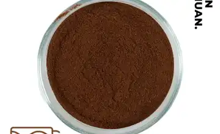
From idea to your own product: how custom flavour development worksAI-drafted (demo) · 2026-11-13Building a syrup menu: 16 classic syrups and how shops use themAI-drafted (demo) · 2026-11-13RTD Protein Manufacturing: Pilot to Full-Scale OEMBusiness & sourcing · 2026-06-09Direct-from-Factory Boba Supply Saves 20-40%Business & sourcing · 2026-06-04Bubble Tea Ingredient Shelf Life & Storage GuideBusiness & sourcing · 2026-06-02Low-Sugar Bubble Tea Sweetener Technology GuideBusiness & sourcing · 2026-05-28Cold Chain vs Ambient Shipping for Boba IngredientsBusiness & sourcing · 2026-05-26RSPO Non-Dairy Creamer Supply Chain GuideBusiness & sourcing · 2026-05-21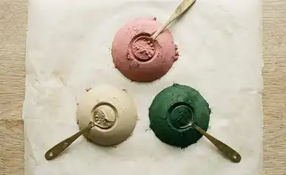
Smoothie Powder Wholesale: Fruit, Protein & GreensBusiness & sourcing · 2026-05-19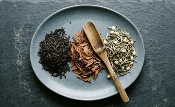
Wholesale Tea Leaves for Bubble Tea: Buyer GuideBusiness & sourcing · 2026-05-14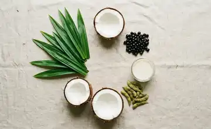
Vegan Bubble Tea Ingredients: B2B ChecklistBusiness & sourcing · 2026-05-1210 Costly Boba Shop MistakesBusiness & sourcing · 2026-05-07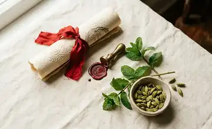
Halal Bubble Tea Ingredients: Certification GuideBusiness & sourcing · 2026-05-05Bubble Tea Ingredients FAQ: 30 B2B Buyer QuestionsBusiness & sourcing · 2026-04-30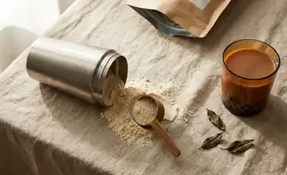
High-Protein Bubble Tea Formulation GuideBusiness & sourcing · 2026-04-27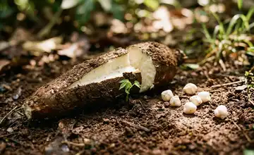
Sustainable Bubble Tea Ingredient Sourcing GuideBusiness & sourcing · 2026-04-27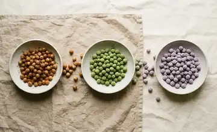
Flavored Tapioca Pearls: Wholesale Supplier GuideBusiness & sourcing · 2026-04-23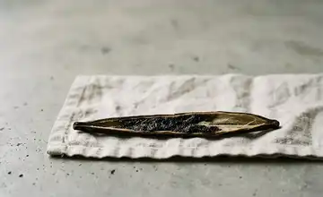
Clean Label Beverage Ingredients: B2B Buyer GuideBusiness & sourcing · 2026-04-18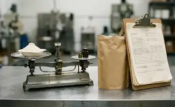
Whey Protein Supplier Checklist: Testing, MOQ & CertsBusiness & sourcing · 2026-04-15Wholesale Bubble Tea Contract: 12-Clause ChecklistBusiness & sourcing · 2026-04-13RSPO-Certified Ingredient Supplier ChecklistBusiness & sourcing · 2026-04-11Popping Boba Manufacturing: Alginate Process GuideBusiness & sourcing · 2026-04-09Collagen Drink Manufacturing: B2B Sourcing GuideBusiness & sourcing · 2026-04-08WPC vs WPI vs Hydrolyzed Whey B2B GuideBusiness & sourcing · 2026-04-06Bubble Tea Wholesale MOQ Explained 2026Business & sourcing · 2026-04-03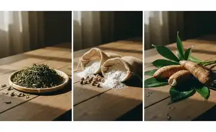
Bubble Tea Supply: Taiwan vs China vs Southeast AsiaBusiness & sourcing · 2026-03-31Taiwan Bubble Tea Franchise Investment & ROI GuideBusiness & sourcing · 2026-03-27Bubble Tea Shop Startup Costs: 2026 Budget GuideBusiness & sourcing · 2026-03-24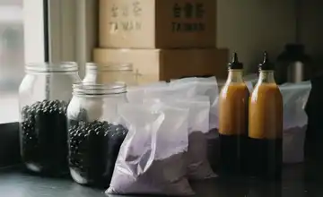
Where to Buy Wholesale Boba: Supplier ComparisonBusiness & sourcing · 2026-03-20Milk Tea Supplier Guide: Quality, Pricing & LogisticsBusiness & sourcing · 2026-03-17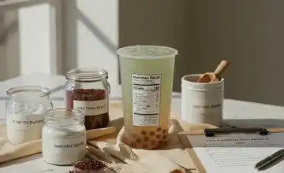
Bubble Tea Nutrition Labeling: FDA Importer GuideBusiness & sourcing · 2026-03-13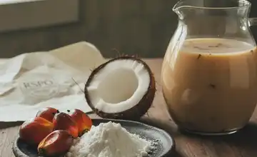
RSPO vs Non-RSPO Creamer: B2B Buyer GuideBusiness & sourcing · 2026-03-10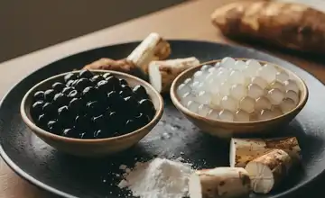
Black vs White Tapioca Pearls: Sourcing GuideBusiness & sourcing · 2026-03-06RSPO-Certified Milk Powder: B2B Sourcing GuideBusiness & sourcing · 2026-03-03Boba Tea Wholesale for Café Chains: Tiers & SLAsBusiness & sourcing · 2026-02-28FSVP Compliance for Bubble Tea ImportersBusiness & sourcing · 2026-02-25Kosher Bubble Tea Ingredients: Sourcing GuideBusiness & sourcing · 2026-02-23Bubble Tea Industry Glossary: 50 B2B TermsBusiness & sourcing · 2026-02-19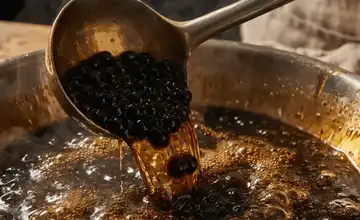
Tapioca Pearls 101: Types, Cooking Tips, and How to Choose the Best BobaTips & trends · 2026-02-19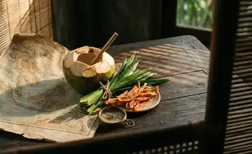
Southeast Asia Bubble Tea Market Entry GuideBusiness & sourcing · 2026-02-17Probiotic Beverage Ingredients: RTD Stability GuideBusiness & sourcing · 2026-02-14Fruit Syrup vs Real Juice with Pulp | Boba Business InsightsBusiness & sourcing · 2026-02-10OEM vs Private Label Bubble Tea: Which Model Is Right for Your Brand?Tips & trends · 2026-02-10US Bubble Tea Market Entry GuideBusiness & sourcing · 2026-02-08Bubble Tea Ingredients List: What You Need to Make Authentic Boba TeaTips & trends · 2026-02-06How to Start a Bubble Tea Business: A Complete Guide for Beginners (2026)Tips & trends · 2026-01-28Building a Long-Term B2B Partnership: Beyond Being a Simple SupplierTips & trends · 2026-01-20AI in Beverage R&D: How Technology is Speeding Up Flavor DevelopmentTips & trends · 2026-01-19Consumer Feedback Loop: How We Refine Flavors Based on Real-World DataTips & trends · 2026-01-18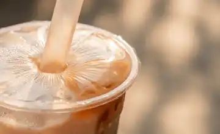
2026 Market Outlook: The Convergence of Indulgence and FunctionalityTips & trends · 2026-01-18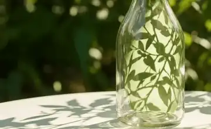
Why "Made in Taiwan" Matters for Functional Beverage InnovationTips & trends · 2026-01-16Sugar-Free and Keto-Friendly: Formulating Guilt-Free Functional DrinksTips & trends · 2026-01-15Supply Chain Transparency: Tracking Mushroom Extracts from Farm to CupTips & trends · 2026-01-13Flavor Masking Techniques: Removing the "Chalky" Taste from Whey ProteinTips & trends · 2026-01-13Plant-Based Protein vs. Whey: Sourcing the Right Protein for Your Target MarketTips & trends · 2026-01-11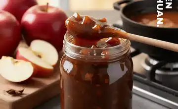
It’s Applicious – try our caramel apple syrup!Recipes · 2026-01-08Bubble Tea Ingredient Trends 2026: Innovations and Future Market DemandsTips & trends · 2026-01-06RFQ Template for Bubble Tea Ingredients: A Copy-Paste Ready Guide for BuyersTips & trends · 2026-01-05Comparing Food Safety Certifications: HACCP vs ISO 22000 vs FSSC 22000Tips & trends · 2026-01-03How B2B Distributors Evaluate Suppliers: Key Priorities and Selection CriteriaTips & trends · 2026-01-01Essential Compliance Documents for Importing Bubble Tea IngredientsTips & trends · 2025-12-31The Rise of Functional Beverages: Sourcing Active Ingredients for 2026Tips & trends · 2025-12-28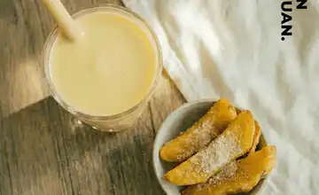
Zesty yet sweet, it’s our pickled plum sweet potato!Recipes · 2025-12-28Standardization for Beverage Chains: How to Maintain Taste Across Global StoresTips & trends · 2025-12-28Comparing Milk Tea Powder, Tea Concentrate, and Brewed Tea for ScalabilityTips & trends · 2025-12-27Popping Boba vs Jelly vs Pudding: Choosing the Best Toppings for Beverage MenusTips & trends · 2025-12-23Yen Chuan wishes you a merry christmas!Tips & trends · 2025-12-23How to Source Bubble Tea Ingredients: A 2026 B2B Buyer’s GuideTips & trends · 2025-12-19Bubble tea made easy – try our Auto Boba Tea Bar!Tips & trends · 2025-12-18Why Source Bubble Tea Ingredients from Taiwan? Quality and Innovation BenefitsTips & trends · 2025-12-16Get ready for springtime with our fruity bubbly refreshers!Tips & trends · 2025-12-09Warm and filling, it’s Purple Sweet Potato walnut!Recipes · 2025-10-30Give yourself a health boost – try our fruity health boosters!Tips & trends · 2025-10-15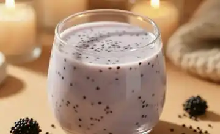
A delicious health boost – How to make Taro quinoa mix!Recipes · 2025-09-29Enjoy a comfy Autumn with Pumpkin Spice Boba!Recipes · 2025-09-18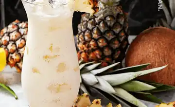
Enjoy the tropical vibes with pina colada boba tea!Recipes · 2025-08-31We helped Kaohsiung make a bubble tea gift set!Tips & trends · 2025-07-22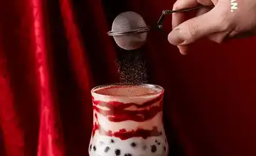
Layered luxury – try red velvet chocolate camo!Recipes · 2025-03-24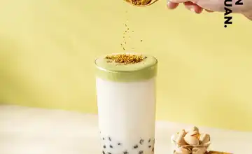
Savoury and delicious, it’s pistachio cream top!Recipes · 2025-03-18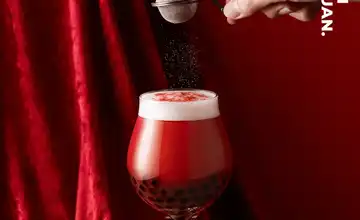
Rich and decadent, it’s red velvet chocolate!Recipes · 2025-03-11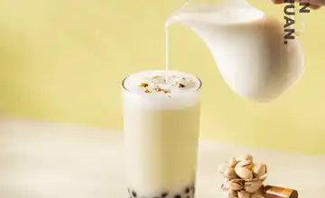
How to make Pistachio bubble teaRecipes · 2025-03-05Wishing you a happy 2025!Tips & trends · 2024-12-18How popular is bubble tea anyways?Tips & trends · 2024-10-23Happy Summer – Let’s make Sparkling Mango Soda!Recipes · 2024-09-30Happy Summer – time for mango matcha mix!Recipes · 2024-09-23How to spice up your bubble tea menuTips & trends · 2024-09-17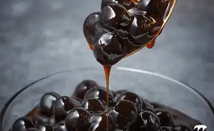
Know your toppings: Tapioca pearlsTips & trends · 2024-09-01How to make the perfect bubble tea: ingredients roundup!Recipes · 2024-08-19Know your toppings – Cream TopTips & trends · 2024-08-06Summer bash: Let’s make Mango Strawberry Mix!Recipes · 2024-07-26Summer Bash – Let’s make Watermelon Matcha Latte!Recipes · 2024-07-17Our brown sugar was chosen as a gift!Tips & trends · 2024-07-08Know your toppings: Popping bobaTips & trends · 2024-06-16Spring of Colours – Let’s make ombre passion fruit punch!Recipes · 2024-04-25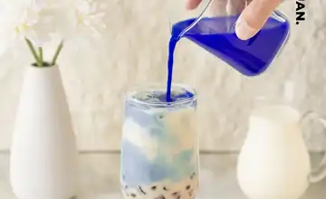
Spring of Colours – Make ombre boba milk tea!Recipes · 2024-04-24Know your food additivesTips & trends · 2024-04-08Celebrate springtime with sakura drinks!Recipes · 2024-03-05Happy Lunar New Year 2024!Tips & trends · 2024-02-05Spice up your drinks with alcoholic crystal boba!Tips & trends · 2023-12-14Warm up with brown sugar boba chocolate!Recipes · 2023-11-08Have a bewitching time with glittery Aurora Stardust!Tips & trends · 2023-10-31Taiwanse snow ice – a fluffy delightul treat!Tips & trends · 2023-10-29Enjoy sweet dreams with lavender milk tea!Recipes · 2023-10-12Enjoy a tropical cuppa – Sicily Coffee!Recipes · 2023-10-01Happy Mid-Autumn Festival!Tips & trends · 2023-09-24Let’s go party with Barbie Syrup!Recipes · 2023-09-19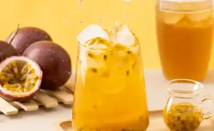
Passion fruit tea – a summer staple!Recipes · 2023-09-12Our website got a revamp!Tips & trends · 2023-09-04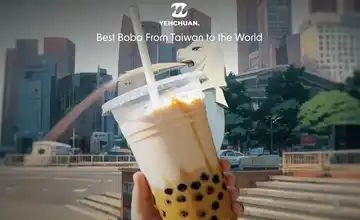
How to start a Profitable Bubble Tea BusinessTips & trends · 2023-09-01Add konjac to your bottled drinks!Tips & trends · 2023-07-31Grass jelly black tea – classic treat with a twist!Recipes · 2023-07-21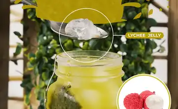
Cool down in summer with green tea lychee jelly!Recipes · 2023-07-14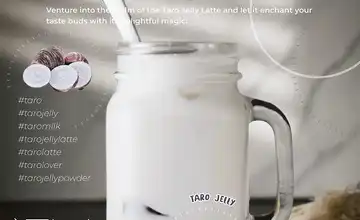
Tasty Terrific Taro jelly!Recipes · 2023-07-07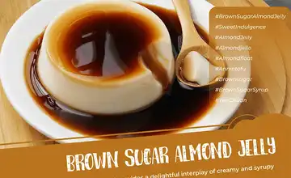
Fancy a sweet treat? Try brown sugar almond jellyRecipes · 2023-06-30Drop the dad jokes, it’s Father’s Day!Tips & trends · 2023-06-19Healthy and delicious! Try out our OEM health boostersTips & trends · 2023-06-13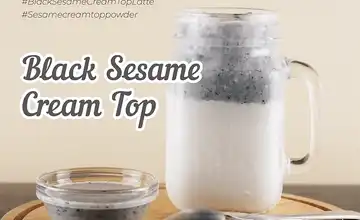
Open sesame, it’s Black Sesame Cream Top Latte!Recipes · 2023-06-09Save the planet together with eco-friendly packaging!Tips & trends · 2023-06-05Oatterly delicious, it’s chocolate oat milk!Recipes · 2023-06-02A sunset in every sip – dawn lychee ombre!Recipes · 2023-05-26Wake up and smell the flowers, it’s Osmanthus milk tea!Recipes · 2023-05-19Happy Mother’s Day!Tips & trends · 2023-05-14How to make Rose green tea with rose jellyRecipes · 2023-05-04Have a bubbly, exciting National Bubble Tea day!Tips & trends · 2023-04-28Enjoy the oatly goodness with Brown Sugar Oat Milk Boba!Recipes · 2023-04-21Enjoy an Eggxellent Exciting Easter Day!Tips & trends · 2023-04-18It’s easy being green – try mango green tea boba!Recipes · 2023-04-10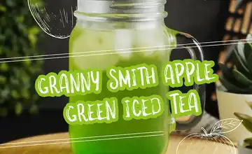
Granny knows best! Try Granny Smith apple green tea!Recipes · 2023-03-31It’s cheesy, it’s creamy, it’s cheese foam matcha!Recipes · 2023-03-24Feeling the Irish Luck? It’s St Patrick’s Day!Tips & trends · 2023-03-17Feeling lucky? Enjoy a glass of Sparkling Mint Lemonade!Recipes · 2023-03-10Celebrate spring with special drinks!Tips & trends · 2023-03-03Rose milk cheese foam, a delicious Valentine’s treat!Recipes · 2023-02-21It’s Valentine’s everyday with your perfect match!Tips & trends · 2023-02-15Time to enjoy fluffy pancakes in Shrove Tuesday!Recipes · 2023-02-09Enjoy a sparkly, sweet treat with peach soda!Recipes · 2023-01-26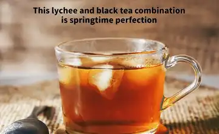
Make springtime a treat with lychee tea!Recipes · 2023-01-19Happy Lunar New Year!Tips & trends · 2023-01-18Let’s make tasty orange green tea!Recipes · 2023-01-12Wishing you a happy 2023!Tips & trends · 2022-12-30Make your own coffeehouse-style hazelnut latte!Recipes · 2022-12-29Alcohol-free alcoholic flavours – enjoy the booze, no more hangovers!Tips & trends · 2022-12-15Wrap up warm with delicious chocolate latte!Recipes · 2022-12-08Stay thankful with thanksgiving day!Tips & trends · 2022-11-29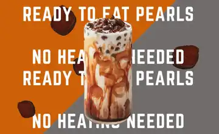
Introducing our Ready-to-eat instant pearls!Tips & trends · 2022-11-21Warm up with yuzu black tea!Recipes · 2022-11-14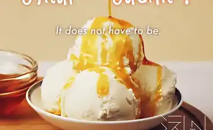
Enjoy guilt-free bubble tea with keto-friendly syrups!Tips & trends · 2022-11-09Let’s make detoxing bamboo charcoal milk tea!Recipes · 2022-11-04Time for a spooky, scary Halloween!Tips & trends · 2022-10-31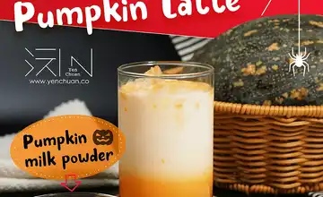
Enjoy a spooky night with caffeine-free pumpkin latte!Recipes · 2022-10-20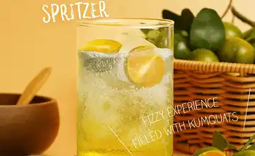
How to make Kumquat SpritzerRecipes · 2022-10-04How to make German Radler BeerRecipes · 2022-09-23Let’s party hard in Oktoberfest!Tips & trends · 2022-09-16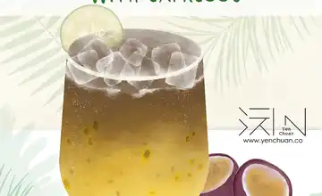
How to make Passion Fruit Soda EspressoRecipes · 2022-09-13How to make Passion Fruit SparklerRecipes · 2022-09-07Duke it out in La Tomatina!Tips & trends · 2022-08-31How to make tomato lemon punchRecipes · 2022-08-30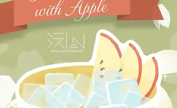
How to make Apple Jasmine Iced TeaRecipes · 2022-08-22Check out the Jasmine festival!Tips & trends · 2022-08-05How to make Coffeehouse Style Caramel Fudge MacchiatoRecipes · 2022-07-15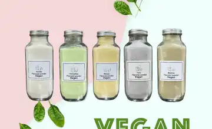
Want to go green? Try vegan bubble tea!Recipes · 2022-06-06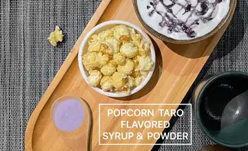
Make your drinks pop with popcorn taro!Tips & trends · 2022-04-15Love is in the air with flower syrups!Tips & trends · 2022-02-11Happy lunar new year!Tips & trends · 2022-01-25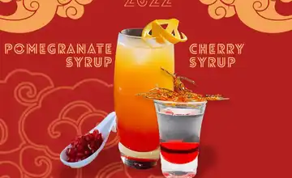
Yen Chuan wishes you a happy new year!Tips & trends · 2022-01-10Merry Christmas from Yen Chuan!!Tips & trends · 2021-12-24Tomato Ginger – Tomato with a zing!Tips & trends · 2021-12-08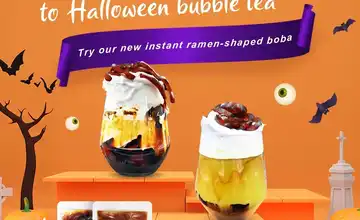
Trick or treat yourself to Halloween bubble tea!Tips & trends · 2021-10-30Yenchuan joins the "Expand your business to the Arab world" workshopTips & trends · 2021-10-26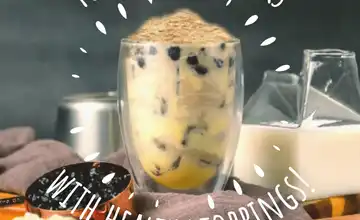
Top up your drinks with healthy toppings!Tips & trends · 2021-09-29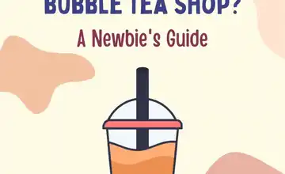
So you want to open a bubble tea shop?Tips & trends · 2021-07-21Stave off the heat with aiyu jelly!Tips & trends · 2021-06-23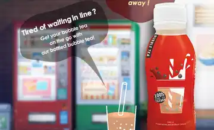
Bring bottled bubble tea on the go!Tips & trends · 2021-05-31Drink safely with preservatives-free syrups!Tips & trends · 2021-04-22Cute bubble tea charms!Tips & trends · 2021-04-08Drink healthy with guilt free powders!Tips & trends · 2021-02-22Happy Lunar New Year!Tips & trends · 2021-02-03Keep it cool with freeze-resistant boba!Tips & trends · 2021-01-11MERRY CHRISTMAS TO ALL!Tips & trends · 2020-12-25Power up with avocado milk powder!Tips & trends · 2020-12-11Brown sugar powder offer!Tips & trends · 2020-11-26Taste the purple with purple sweet potato!Tips & trends · 2020-10-30SMALL SWEET SYRUPS!Tips & trends · 2020-10-14Statement regarding flavouringsTips & trends · 2020-08-07Colourful custom tapioca pearls!Tips & trends · 2020-08-06Protect the environment with eco-friendly straws!Tips & trends · 2020-07-29Introducing our Taiwanese tea gift set!Tips & trends · 2020-07-09INSTANT TAPIOCA PEARLS!Tips & trends · 2020-06-20Refreshing summer with fruit juice syrups!Tips & trends · 2020-04-22Instant bubble tea!Tips & trends · 2020-04-09A message to our customers about the coronavirusTips & trends · 2020-03-25Mix and Match your Matcha!Tips & trends · 2020-03-16Pretty up your cups with Camo powder!Recipes · 2020-02-27HAPPY LUNAR NEW YEAR!Tips & trends · 2020-01-20DIAMOND CUPS!Tips & trends · 2020-01-09MERRY CHRISTMAS!Tips & trends · 2019-12-24Wintery bubble teaTips & trends · 2019-12-13Know your Brown SugarTips & trends · 2019-10-31Tapioca pearl dessertsTips & trends · 2019-10-22CHUBBY CUPS!Tips & trends · 2019-10-04PAPER STRAWS!Tips & trends · 2019-10-04PAPER CUP HOLDERS!Tips & trends · 2019-10-02HONEYDEW MELON POWDER!Tips & trends · 2019-09-29MATCHA POWDER!Tips & trends · 2019-09-29Hello from Yen Chuan!Tips & trends · 2017-03-08